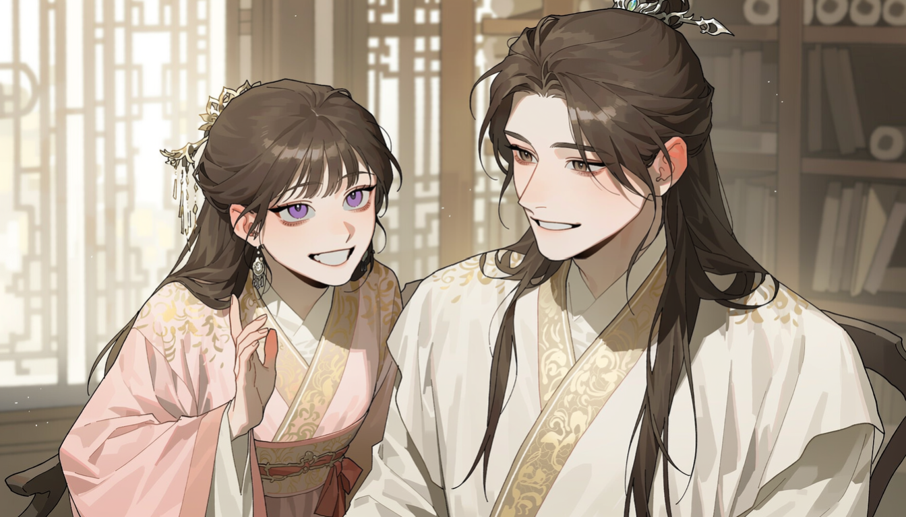
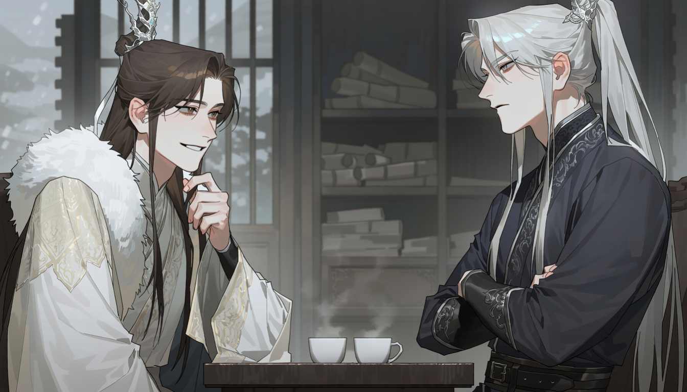
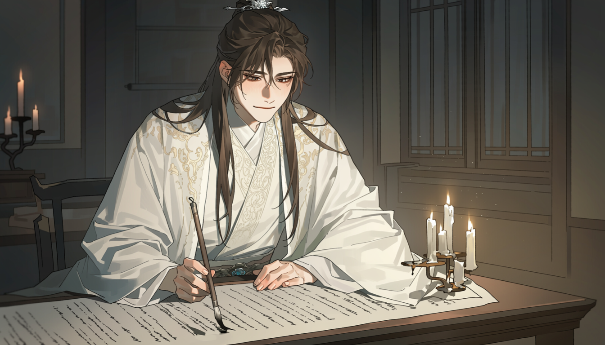
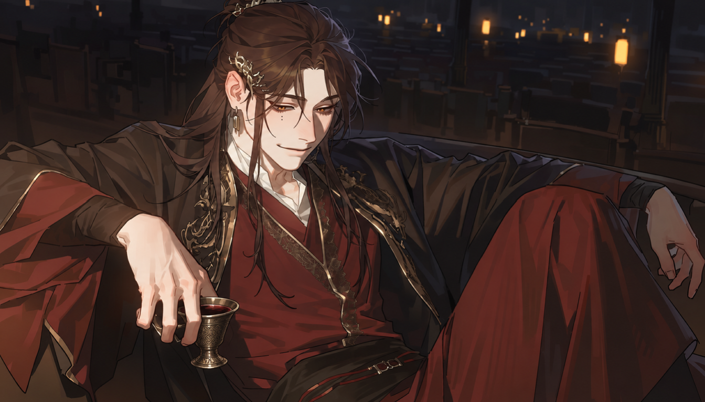
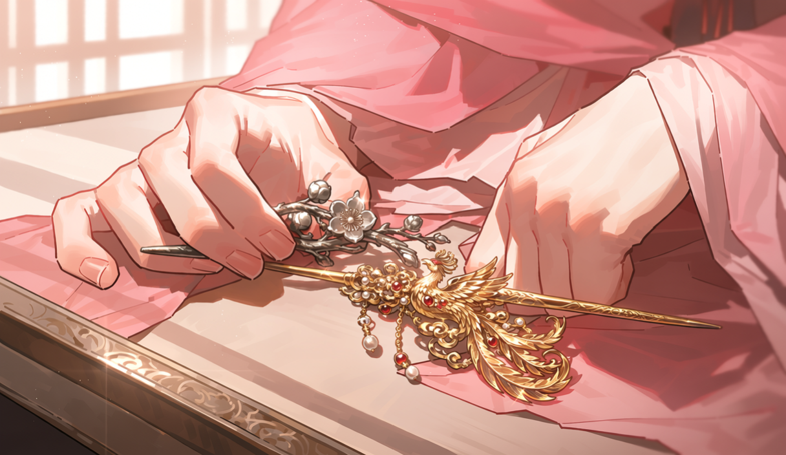
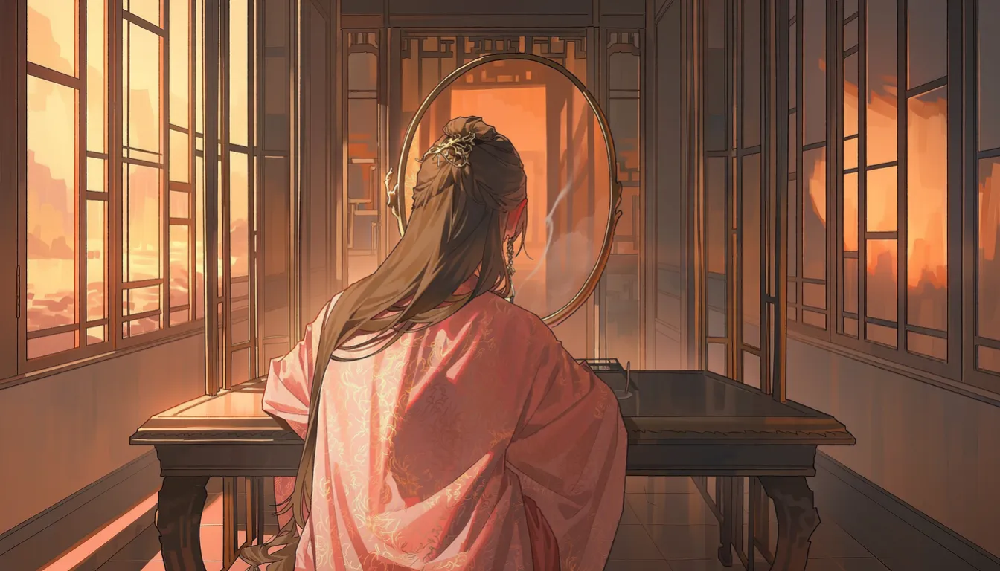

제4화｜꽃이 지기 전에는
정화 12년~17년 · 사가 저택, 황도
고청화는 사가의 대문을 처음 넘던 날을 기억했다.
그해 그의 나이는 열넷이었다.
고가의 아들로 태어났으나 이제부터는 사가의 후계를 이을 몸이었다. 아버지의 성을 버리는 것은 아니었지만, 앞으로는 사가의 제사를 모시고 사가의 재산을 관리하며 사가의 이름으로 벼슬에 올라야 했다.
사가에는 아들이 없었다.
적녀 사청의가 있었으나 여식은 출가하면 남편의 집안으로 들어가는 것이 도리였다. 대대로 재상을 배출한 가문의 제사를 끊을 수는 없는 노릇이니, 인척 가운데 재주 있고 품행이 단정한 아들을 들이는 것은 자연스러운 선택이었다.
사람들은 고청화에게 복이 많다고 했다.
가난한 집안도 아니었으나, 사가의 양자가 된다는 것은 아예 다른 세상의 문을 여는 일이었다.
그는 그 말에 웃으며 답했다.
고청화│"과분한 은혜를 입었으니 더욱 힘써야지요."
그때부터 고청화는 노력했다.
새벽에는 글을 읽고, 낮에는 가주를 따라 조정의 일을 배우고, 저녁에는 집안의 장부를 익혔다. 사가의 식솔들은 그를 도련님이라 불렀고, 사문겸은 때로 친아들보다 엄하게 그를 가르쳤다.
고청화는 불평하지 않았다.
그것이 그가 선택받은 이유이기도 했다.
그러나 사람의 마음이란 종이 위에 쓰인 대로만 자라지는 않는 법이었다.
청의가 열다섯이 되었을 무렵, 안채의 어린 시녀 하나가 영녀에게 내릴 차를 잘못 가져온 일이 있었다.
원래는 청의에게 올릴 귀한 차였다. 고완녕이 친정에서 받은 것이어서 아끼는 손님이 올 때에나 꺼내는 물건이었다.
시녀는 찻주전자를 바꾸어 놓았다는 사실을 뒤늦게 깨닫고 울음을 터뜨렸다.
시녀│"죽을죄를 지었사옵니다."
마침 안채에 들렀던 고청화가 소란을 들었다.
고청화│"무슨 일이냐?"
시녀가 자초지종을 설명했다.
그는 잠시 듣다가 물었다.
고청화│"차는 얼마나 마셨느냐?"
시녀│"아직…… 아직 잔에 따르기만 하였사옵니다."
고청화│"그럼 새로 올리면 되겠구나."
시녀│"하지만 마님께서 아시면……."
고청화│"내가 말씀드리마."
시녀는 그제야 울음을 그쳤다.
고청화는 찻잔을 내려다보았다.
맑은 찻물 위에 창밖의 대나무 그림자가 길게 드리워져 있었다.
어릴 적 청의가 산사 열매를 둘로 나누어 먹자고 했던 일이 떠올랐다.
고청화는 문득 웃었다.
고청화│"이 차가 누구 것인지는 잔에 적혀 있지 않으니, 그리 놀랄 일도 아니다."
그는 따라 놓은 잔을 물리지 않았다.
고청화│"이미 따른 것은 도로 담을 수 없지. 식기 전에 받을 사람에게 올려라."
시녀가 눈을 크게 떴다.
시녀│"하오나 도련님, 그것은 영녀의……."
고청화│"그래. 그 아이 앞에 놓으라는 말이다."
그날 영녀의 상에는 마님의 친정에서 온 차가 올랐다.
고청화는 그 잔이 놓이는 것을 끝까지 보지 않고 안채를 나섰다.
그날 저녁, 그는 부인의 처소로 불려 갔다.
고완녕은 불쾌한 기색 없이 물었다.
고완녕│"청화야, 오늘 안채에서 작은 소동이 있었다지?"
고청화│"예, 어머니."
고완녕│"네가 잘 수습했다고 들었다."
고청화│"시녀가 실수한 것뿐입니다."
고완녕은 잠시 아들을 바라보았다.
고완녕│"네가 다정한 것은 안다. 그러나 네가 감싸는 만큼 그 아이들이 더 큰 잘못을 저지를 수도 있어."
고청화는 고개를 숙였다.
고청화│"명심하겠습니다."
고완녕│"청의는 이제 어린아이가 아니다. 곧 혼담이 오갈 나이이고, 궁중에도 자주 드나들지 않느냐. 그 아이의 곁을 지키는 자들에게도 분수를 가르쳐야 한다."
고청화의 손이 무릎 위에서 잠시 멎었다.
부인은 그 움직임을 알아차리지 못했다.
곁을 지키는 자. 어머니가 가리키는 이가 울던 어린 시녀가 아니라는 것쯤은 그도 알았다.
고완녕│"무엇보다 네가 사가의 후계자라는 사실을 잊어서는 안 된다."
고청화│"……예."
고청화는 늘 그 말을 들으며 자랐다.
사가의 후계자.
그것은 영광이었고, 의무였으며, 그의 자리를 정해 주는 이름이었다.
그런데 그날만큼은 어쩐지 그 이름이 무거웠다.
· · ·
시간이 흘러 청의가 열일곱이 되자 사가에는 혼담이 들기 시작했다.
처음에는 문신 집안의 자제들이었다.
혼담을 전하러 오는 매파들은 저마다 청의의 미모와 재주를 칭송했다. 아직 얼굴조차 제대로 본 일이 없으면서도 사가의 아가씨가 얼마나 뛰어난 규수인지 입을 모았다.
청의는 그 소리를 들을 때마다 질색했다.

사청의│"고 오라버니."
고청화│"응."
사청의│"내가 시집가면 오라버니는 좋아?"
고청화는 장부를 넘기던 손을 멈추었다.
고청화│"어찌 그런 것을 묻니?"
사청의│"다들 좋다잖아. 어머니도 좋다 하고, 아버지도 좋은 혼처라고 하시고."
고청화│"좋은 혼처라면 기쁜 일이지."
사청의│"그럼 나도 좋아해야 하나?"
고청화는 잠시 청의를 바라보았다.
분홍빛 옷자락이 창가에서 살랑거렸다. 어려서는 소매를 걷어붙이고 마당을 뛰어다니던 아이가 어느새 어른의 머리 모양을 하고 있었다.
그는 웃었다.
고청화│"네가 싫다면 무슨 소용이겠니."
청의의 얼굴이 환해졌다.
사청의│"그렇지?"
고청화│"다만 혼인이란 두 사람만의 일은 아니니, 부모님의 뜻도 살펴야겠지."
사청의│"오라버니는 꼭 마지막에 재미없는 말을 해."
청의는 입술을 삐죽였다.
사청의│"처음부터 그렇게 말하면 누가 좋아하겠어?"
고청화│"그럼 어떤 말을 해 주랴?"
사청의│"그냥 싫으면 안 가도 된다고."
고청화는 잠시 웃음을 잃었다.
그런 말을 해 줄 수 있었다면 얼마나 좋았을까.
그러나 그는 사가의 후계자였고, 청의는 사가의 적녀였다.
둘의 혼인은 모두 가문이 결정할 일이었다. 서로가 서로에게 가장 가까운 가족이라 해도, 그 사실만은 바꿀 수 없었다.
고청화는 한참 뒤에야 대답했다.
고청화│"네 마음에 드는 사람이 오면 좋겠구나."
청의는 그 말을 듣고 코웃음을 쳤다.
사청의│"그런 사람이 어디 있어."
고청화│"아직 만나지 못했을 수도 있지."
사청의│"그럼 평생 안 만나면?"
고청화│"……청의야."
사청의│"알았어, 알았어."
그녀는 손을 내저었다.
사청의│"또 부모님의 뜻을 살피라는 거지?"
고청화는 끝내 웃고 말았다.
청의는 그 웃음을 보고 더욱 심술이 난 듯했으나, 곧 턱을 괴고 딴 것을 물었다.
사청의│"그럼 내가 시집가면 그 애는?"
고청화의 웃음이 멎었다.
고청화│"……그 애라니."
사청의│"누구긴. 나 따라오는 거야, 여기 남는 거야?"
그는 대답하지 못했다.
혼처를 재는 어른들 가운데 그것을 입에 올린 사람은 아직 아무도 없었다. 주인이 떠난 뒤의 그림자를 어디에 두는지는 사가의 어느 예법서에도 적혀 있지 않았다.
고청화│"알아보마."
사청의│"꼭이야. 오라버니가 알아봐 준다고 했어."
그날의 대화는 그렇게 끝났다.
그러나 고청화는 나중에야 깨달았다.
가족이라는 것은 때로 곁에 있어 주는 것만으로 충분하지 않다는 사실을.
· · ·
심유백이 사가의 이름을 처음으로 깊이 기억한 것은 오래된 토지 소송 때문이었다.
당시 그는 대리시에서 실무를 맡기 시작한 젊은 관리였다.
고위 관료의 자제가 아니었고, 권세 있는 집안에 특별히 기대지도 않았다. 사람들이 그를 기억하는 이유는 따로 있었다.
그는 한번 장부를 펼치면 좀처럼 덮지 않았다.
그해 겨울, 도성 남쪽의 작은 토지를 두고 두 집안이 다투었다.
한쪽은 사가의 먼 인척이었고, 다른 한쪽은 변방에서 전사한 군관의 미망인이었다. 토지는 크지 않았으나 그 위에 지어진 창고가 문제였다.
창고의 사용권이 누구에게 있는가.
문서상으로는 사가의 인척이 옳았다.
그러나 심유백은 장부 한 귀퉁이에 적힌 날짜를 오래 살폈다.
심유백│"이 문서는 언제 작성되었소?"
아전이 답했다.
아전│"석 달 전이옵니다."
심유백│"토지를 넘겨받았다는 날짜는?"
아전│"다섯 달 전이옵니다."
심유백│"그럼 두 달 동안은 누구의 땅이었소?"
아전이 머뭇거렸다.
아전│"그것은……."
심유백│"장부를 가져오시오."
아전│"나리, 사소한 착오일 수도 있사옵니다."
심유백은 고개를 들었다.
심유백│"착오라면 바로잡으면 될 것이오."
그의 말에는 노여움이 없었다.
그저 말 그대로였다.
장부를 다시 대조하고, 증인을 불러 묻고, 문서를 작성한 서리를 조사했다. 결과적으로 사가의 인척이 토지 일부를 부당하게 넘겨받은 정황이 드러났다.
심유백은 이를 상관에게 보고했다.
며칠 뒤, 사가에서 사람이 찾아왔다.
고청화였다.
그는 예를 갖추어 인사했다.
고청화│"심 대인께서 이번 사건을 맡으셨다 들었습니다."
심유백│"그렇소."
고청화│"고가의 청화라 합니다. 지금은 사가에서 지내고 있습니다."
심유백│"알고 있소."
고청화는 온화하게 웃었다.
고청화│"이미 알고 계셨군요."
심유백│"소송에 관계된 집안이니 알아야지요."
그 말에 고청화는 잠시 웃음을 멈추었다.
심유백은 그에게 자리를 권했다.

따뜻한 차가 나왔다.
그러나 두 사람 모두 잔에 손을 대지 않았다.
고청화│"이번 일로 가주께서 심려가 크십니다."
고청화가 먼저 입을 열었다.
심유백│"그럴 수 있겠소."
고청화│"사가의 이름을 빌려 사사로운 이익을 취한 자가 있다면, 가문에서도 그대로 두지 않을 생각입니다."
심유백│"좋은 일이오."
심유백은 담담히 답했다.
심유백│"고 소공자께서는 무슨 말씀을 하러 오셨소?"
고청화가 잠시 그를 바라보았다.
그런 뒤 부드럽게 웃었다.
고청화│"그저 가문의 뜻을 전하러 왔습니다. 이번 일은 사가 역시 엄중히 보고 있다는 것을."
심유백│"알겠소."
고청화│"다만 연루된 자 가운데 억울한 이가 없도록 살펴 주시면 감사하겠습니다."
심유백은 잔을 내려놓았다.
심유백│"그것이 내 일이오."
고청화│"……그러시군요."
심유백│"그리고 죄가 있는 자를 억울하다 부르지 않도록 하는 것도."
고청화의 눈빛이 잠시 가라앉았다.
이윽고 그는 예를 갖추어 일어섰다.
고청화│"앞으로 잘 부탁드립니다."
심유백│"그럴 일이 없기를 바라오."
고청화가 문을 나서려다 멈추었다.
심유백이 덧붙였다.
심유백│"대리시에서 다시 만날 일이 없기를 바란다는 뜻이오."
고청화는 잠시 그를 보았다.
그리고 웃었다.
고청화│"저 역시 그러기를 바랍니다."
그날 이후 두 사람은 서로의 이름을 기억했다.
한 사람에게는 가문을 지켜야 할 사정이 있었고, 다른 한 사람에게는 가문의 사정을 살피지 않아야 할 의무가 있었다.
그때까지만 해도 그것은 작은 토지 소송에 지나지 않았다.
· · ·
정화 15년, 사가에는 마침내 황실의 혼담이 들어왔다.
상대는 셋째 황자 경소헌이었다.
이미 감왕의 봉호를 받은 그는 황태자 다음으로 명망 높은 황족이었다. 황실이 유력 문신 가문인 사가와 혼맥을 맺는다는 소식에 도성의 귀족들은 저마다 다른 표정을 지었다.
사가에서는 며칠 동안 손님이 끊이지 않았다.
사문겸은 평소보다 더욱 신중하게 말을 골랐고, 고완녕은 딸의 혼수에 들어갈 비단을 고르느라 분주했다.
고청화 역시 바빠졌다.
혼수뿐 아니라 예물과 길일, 왕부에 들어갈 시종들의 명부까지 살펴야 했다.
그 모든 과정에서 청의는 정작 가장 한가한 사람처럼 굴었다.
사청의│"고 오라버니."
어느 날 그녀가 물었다.
사청의│"감왕 전하는 웃기도 하셔?"
고청화는 먹을 갈던 손을 멈추었다.
고청화│"그게 궁금하니?"
사청의│"그럼 뭐가 궁금해야 해?"
고청화│"왕야의 학식이라든지, 성품이라든지."
사청의│"그건 오라버니가 알아봐 줘."
청의는 태연히 말했다.
사청의│"잘생긴 건 나도 알아. 궁에서 몇 해를 뵈었는데. 그 얼굴로 웃으면 어떤지가 궁금한 거지."
고청화는 한숨을 쉬었다.
고청화│"아주 훌륭한 분이셔."
사청의│"웃으신다는 뜻이야?"
고청화│"그런 뜻만은 아니다."
사청의│"그럼 안 웃으셔?"
고청화│"청의야."
그녀가 깔깔 웃었다.
고청화도 결국 따라 웃었다.
그러나 웃음이 가라앉자 청의는 문득 물었다.
사청의│"왕야께서는 나를 얼마나 아실까?"
고청화는 답을 고르느라 잠시 시간이 걸렸다.
고청화│"궁중에서 오래 알고 지내셨으니, 네가 어떤 사람인지는 알고 계시겠지."
사청의│"오래 알면 다 알게 되는 거야?"
고청화│"그렇지는 않겠지만."
사청의│"그렇구나."
청의는 창밖으로 눈을 돌렸다.
마당의 매화는 이미 지고 없었다.
그 대신 어린 잎들이 가지를 채우고 있었다.
사청의│"그럼 혼인하고 나서도 새로 알아야 할 게 많겠네."
고청화는 웃었다.
고청화│"그게 혼인 아니겠니."
청의는 잠시 생각하더니 고개를 끄덕였다.
사청의│"그것도 재미있겠다."
그녀는 그 말을 끝으로 다른 이야기를 꺼냈다.
새로 들인 비단이 너무 촌스럽다는 불평이었다.
고청화는 익숙하게 그 불평을 들어 주었다.

다만 그날 밤, 그는 왕부로 보낼 시종의 명부 앞에서 유난히 오래 붓을 놓지 못했다.
영녀의 이름을 적을 자리가 없었다.
딸려 보내면 왕야의 곁에 같은 얼굴이 둘이 된다. 남겨 두면 사가에는 쓰임을 다한 그림자가 하나 남는다.
그는 남겨 두는 쪽을 먼저 헤아리고 있었다.
그것이 그 아이를 위한 셈인지 저를 위한 셈인지 가려지지 않아, 고청화는 붓을 내려놓았다.
알아보겠다고 한 지 한 해가 지나 있었다. 그는 아직 청의에게 들려줄 답을 찾지 못했다.
· · ·
혼담이 정해지자 경소헌에게도 사가의 이름은 전보다 무거워졌다.
왕부로 들여오는 물건 하나에도 사가의 뜻이 묻어 있었고, 청의에게 보내는 선물 하나에도 황실의 체면이 걸렸다.
위랑은 그 사실을 누구보다 못마땅해했다.
어느 날 연회에서 그는 경소헌의 잔을 보며 빈정거렸다.
위랑│"전하, 사가와 혼인하신다면서요."
경소헌│"그리되었소."
위랑│"세상에 여인이 그리 많은데 하필 사가라니."
경소헌은 잔을 들었다.
경소헌│"그대는 내 혼인이 불만이오?"
위랑│"제 불만이 무슨 소용이겠습니까."
경소헌│"그걸 아는 사람이 왜 그리 말이 많소?"
위랑은 웃었다.
위랑│"그냥 신기해서 그렇지요."
경소헌│"무엇이?"
위랑│"전하께서 그 사가의 아가씨를 택하셨다는 것이."
경소헌의 손이 잠시 멎었다.
경소헌│"혼인은 황실의 뜻이오."
위랑│"그렇습니까."
위랑은 잔을 비웠다.
위랑│"뭐, 사가의 아가씨도 전하께서 아주 못마땅하지는 않으신 모양입니다."
경소헌이 눈을 들었다.
경소헌│"그대가 어찌 아오?"
위랑│"궁에서 몇 번이나 봤는데요."
경소헌│"그것이 그대와 무슨 관계가 있소?"
위랑은 능청스럽게 웃었다.
위랑│"아주 오래된 악연이지요."
경소헌│"그렇다면 앞으로는 조심하시오."
위랑│"어째서입니까?"
경소헌은 잔을 내려놓았다.
경소헌│"그대가 함부로 시비를 거는 여인이 내 왕비가 될지도 모르니."
위랑은 잠시 말을 잃었다.
그러다가 크게 웃음을 터뜨렸다.
위랑│"전하, 벌써부터 편을 드시는 겁니까?"
경소헌│"예의를 지키라는 말이오."
위랑│"그럼 왕비마마가 되기 전까지는 괜찮습니까?"
경소헌은 그를 물끄러미 보았다.
위랑이 먼저 두 손을 들었다.
위랑│"알겠습니다. 알겠어요."
그러나 웃음기 어린 눈은 여전히 짓궂었다.
위랑│"아, 참으로 섭섭한 일이군요. 오래 놀리던 사람 하나를 이리 빼앗기다니."
경소헌은 대답하지 않았다.

그날 연회가 끝난 뒤 위랑은 혼자 오래 술을 마셨다.
곁의 시종이 이제 그만 돌아가자고 권하자 그는 잔을 흔들며 웃었다.
위랑│"이상하지 않으냐."
시종│"무엇이 말씀이십니까?"
위랑│"사람이 귀찮게 굴 때는 그리 성가시더니."
위랑은 술잔을 내려다보았다.
위랑│"이제 귀찮게 굴 일이 없어지니 또 심심하군."
시종은 무슨 뜻인지 알아듣지 못했다.
위랑은 더 설명하지 않았다.
· · ·
정화 17년, 여름은 유난히 길었다.
황실에서는 중추절을 앞두고 연회를 베풀었고, 도성의 귀족들은 서로 예물을 주고받느라 분주했다.
사가는 왕부와 혼례 날짜를 다시 상의하고 있었다.
청의는 스무 살이 되었다.
어릴 적처럼 심술을 부리기도 했고, 고청화에게 쓸데없는 질문을 던지기도 했다. 어머니가 지켜보는 앞에서는 제법 얌전한 규수처럼 앉아 있다가도, 시녀들만 남으면 소매를 걷어붙이고 과자를 집어 먹었다.
그런 모습은 조금도 달라지지 않았다.
어느 날 고청화가 안채에 들렀을 때, 청의는 경대 앞에서 새로 들어온 비녀를 고르고 있었다.
사청의│"오라버니."
그녀는 거울을 통해 그를 보았다.
사청의│"이것 좀 봐."

고청화가 다가가자 청의는 손에 든 비녀 두 개를 내밀었다.
하나는 금으로 만든 봉황 비녀였고, 다른 하나는 오래 써서 빛이 누그러진 은비녀였다.
사청의│"어느 게 더 예뻐?"
고청화│"금비녀."
사청의│"왜?"
고청화│"혼례에 쓸 것이라면 그게 어울리지."
사청의│"아니, 그냥 나한테."
고청화는 잠시 그녀를 살폈다.
청의는 고개를 살짝 기울이고 있었다. 눈가에는 웃음기가 남아 있었으나 대답을 재촉하지 않았다.
그는 은비녀를 가리켰다.
고청화│"그것."
사청의│"왜?"
고청화│"네가 오래 써 온 것이니까."
청의가 웃었다.
사청의│"이상해. 오라버니는 꼭 그런 걸 고르더라."
고청화│"오래 보아 익숙한 것이 좋지 않니."
사청의│"그럼 새것은?"
고청화│"새것도 좋지."
사청의│"둘 다 좋다고 하면 고르는 의미가 없잖아."
청의는 투덜거리다가 은비녀를 경대 위에 내려놓았다.
금비녀는 함에 넣었다.
고청화는 문득 그 은비녀를 다시 보았다.
매화 꽃잎을 새긴 것이었다.
어릴 적 청의가 둘을 나란히 놓고 어느 것이 제 것인지 알아맞히라던 장난이 떠올랐다.
고청화│"아직도 가지고 있구나."
사청의│"그럼 버려?"
고청화│"그런 뜻이 아니다."
사청의│"오라버니는 참 이상해."
청의는 피식 웃었다.
사청의│"오래된 게 좋다면서, 오래 가지고 있으면 또 신기해하고."
고청화는 무어라 대꾸하려다가 그만두었다.
청의가 그런 말을 하는 것은 새삼스러운 일이 아니었다.
그는 그저 웃으며 비녀 함을 닫아 주었다.
나서기 전, 그는 소매에서 기름종이에 싼 것을 꺼내 경대 곁에 놓았다.
엿물 입힌 산사 꼬치가 둘이었다.
고청화│"하나는 네 것이 아니다."
사청의│"알아."
청의는 돌아보지도 않고 대답했다.
사청의│"십 년째 하나는 내 것이 아니었잖아."
고청화는 웃었다.
그는 두 사람을 헷갈려 본 적이 없었다.
비녀도 향낭도 끝내 가려내지 못했으나 사람만은 틀린 적이 없었고, 그 까닭을 오래 생각하지 않으려 했다.
청의를 볼 때는 마음이 놓였다. 다른 한쪽을 볼 때는 눈을 먼저 거두게 되었다.
누이의 얼굴이었다.
그 얼굴 앞에서 누이에게는 든 적 없는 마음이 드는 것을, 그는 무엇이라 불러야 할지 알지 못했다. 알지 못하는 채로 두는 편이 옳았다.
그래서 그는 십 년째 꼬치를 둘 사 왔고, 십 년째 하나는 청의의 손에 맡긴 채 돌아섰다.
· · ·
중추절이 지나고 며칠 뒤, 사가의 저녁 식사 자리에서는 평소처럼 혼례 이야기가 오갔다.
고완녕은 비단의 색을 두고 시녀장과 상의했고, 사문겸은 감왕부에서 보내온 날짜를 검토했다.
청의는 지루한 얼굴로 과자를 집어 먹었다.
사청의│"아버지."
사문겸│"말하거라."
사청의│"저는 언제까지 감왕 전하를 만나러 다녀야 해요?"
사문겸이 장부에서 눈을 들었다.
사문겸│"무슨 소리냐?"
사청의│"혼례를 치르면 매일 뵐 텐데요. 그전에 이렇게 자꾸 뵈어야 해요?"
고완녕이 가볍게 나무랐다.
고완녕│"청의야, 말버릇이 그게 무엇이니."
사청의│"그냥 궁금해서요."
사문겸은 잠시 딸을 보았다.
사문겸│"왕야께서 너와 이야기를 나누길 원하시니 따르는 것이 도리다."
청의는 과자를 내려놓았다.
사청의│"예, 아버지."
곧 얌전하게 대답했다.
고청화는 그 모습을 보며 작게 웃었다.
청의가 저토록 순순히 물러날 때에는 대개 얼마 지나지 않아 또 다른 말을 꺼내기 마련이었다.
과연 그녀는 잠시 뒤 고개를 들었다.
사청의│"그럼 혼례를 치르면 안 가도 되겠네요?"
고완녕이 한숨을 쉬었다.
고완녕│"그때는 왕부에서 살아야지."
사청의│"아."
청의는 무척 중요한 사실을 이제야 알았다는 듯 고개를 끄덕였다.
사청의│"그러네."
식탁에 웃음이 번졌다.
사문겸조차 입가를 조금 누그러뜨렸다.
그날 저녁은 특별할 것이 없었다.
명문가의 적녀가 혼례를 앞두고 투정을 부리고, 가족들이 그것을 달래는 평범한 자리였다.
· · ·
이튿날 아침, 고청화는 혼수에 들어갈 물건의 명부를 정리했다.
왕부로 보낼 의복은 서른여섯 벌이었고, 사계절마다 다른 향낭을 갖추었다. 비녀와 패물은 이미 부인이 골라 두었으며, 나머지는 가주의 허락을 받아야 했다.
그는 장부를 넘기다가 문득 한곳에서 손을 멈추었다.
청의가 오래 쓰던 은비녀가 명부에 없었다.
당연한 일이었다.
혼수에는 새로 지은 물건을 넣는 법이니, 오래된 비녀는 기록할 까닭이 없었다.
영녀의 이름도 마찬가지였다. 왕부로 가는 명부에도, 사가에 남는 명부에도 없었다.
고청화는 잠시 붓을 든 채 앉아 있었다.
그러다가 명부의 다음 줄을 채웠다.
그가 어릴 적부터 지켜본 사가는 언제나 그러했다.
누구의 물건인지 정해져 있었고, 누구의 자리인지 정해져 있었으며, 무엇을 어디에 두어야 하는지도 정해져 있었다.
그 질서 덕분에 사가는 오랫동안 번영했다.
고청화는 그것을 의심하지 않았다.
적어도 그때까지는.
· · ·

정화 17년 8월 19일.
해가 기울기 시작할 무렵, 사가의 안채에는 목욕물이 데워졌고 새 비단옷이 놓였다.
감왕부에 들기 위한 가마가 뒷문으로 들어왔다.
시녀들은 언제나처럼 분주했다.
머리를 빗을 빗과 분합을 준비하고, 향낭을 골랐으며, 늦지 않게 출발하라는 분부를 거듭 전했다.
사가의 적녀가 약혼자를 만나러 가는 날이었다.
조금도 특별하지 않은 일이었다.
다만 이날은 아가씨가 유난히 일찍 시녀들을 물렸다.
경대 위에는 매화를 새긴 은비녀가 놓여 있었다.
청의는 그것을 집어 들고 잠시 바라보았다.
창밖에서는 저녁 종을 준비하는 소리가 들렸다.
그녀는 비녀를 함에 다시 내려놓았다가, 마음이 바뀐 듯 손에 들었다.
그리고 문밖을 향해 말했다.
사청의│"아직 멀었어?"
대답 대신 복도를 지나가는 발소리가 들렸다.
청의는 거울을 들여다보았다.
스무 살의 얼굴이었다.
열 살 무렵 처음 마주했던 다른 얼굴과 얼마나 닮았는지, 이제는 새삼스레 헤아릴 필요도 없었다.
그녀는 향 한 대를 피웠다.
얇은 연기가 경대 위로 천천히 올랐다.
잠시 뒤, 청의는 문가로 고개를 돌렸다.
사청의│"오면 바로 들이라고 해."
시녀가 예를 갖추었다.
시녀│"예, 아가씨."
복도 끝으로 해가 기울고 있었다.
사가의 처마 아래 그림자가 길어졌다.
그리고 그날 저녁, 사청의는 누군가를 기다리고 있었다.
오래전 처음 만났을 때부터 한 번도 남처럼 여겨 본 적 없는, 세상에서 가장 익숙한 얼굴을.
— 프리퀄 《이름을 빌린 계절》 完 —
· · ·
본편으로 이어지는 마지막 문장
正和 十七年 八月 十九日 · 酉時
해가 서쪽 담장에 걸려, 창살 그림자가 마룻바닥에 길게 누워 있었다.
그리고 이곳에서, 《대역의 죄》가 시작된다.
제4화 끝